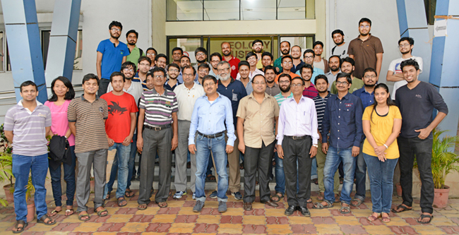

We had fun!
Information information
Computing for Data Sciences | BAISI-4 for PGDBAInstructor : Sourav Sen Gupta | RCBC, ISI Kolkata
Lectures : Thursday (11:00 - 13:00) and Friday (14:15 - 16:15)
Assignments : Mid-Sem Exam : End-Sem Exam = 20 : 30 : 50
Slides : Overview of the Course (as discussed on Day 1)
Lectures lectures
The regular lectures constitute 45 hours of instructional sessions for this course. In addition to these, some invited lectures will be arranged to illustrate various applications of computation on big data.Invited Lectures
All invited lectures will be held at the NAB-I Seminar Hall, Ground Floor of Kolmogorov Building.| Date-Time | Speaker | Topic | Resources |
|---|---|---|---|
| 01 Oct 2015
11:00--13:00 |
Dr. Diganta Mukherjee | High Frequency Trading | Lecture Notes
Ref. Papers |
| 01 Oct 2015
16:30--18:00 |
Prof. Smarajit Bose | Robust Speaker Identification | Lecture Slides |
| 06 Oct 2015
16:30--18:00 |
Prof. C. A. Murthy | Large Data Sets and
Notion of Distance |
KDnuggets |
| 09 Oct 2015
16:30--18:00 |
Mr. Ayan Bandyopadhyay | Mining Tweets
TweetStream | twitter4j-4.0.4 |
Lecture Slides
twitteR (for R) |
| 13 Oct 2015
16:30--18:00 |
Dr. Debapriyo Majumdar | Data Mining
Course Notes (Fall 2014) |
Lecture Slides |
| 02 Nov 2015
17:00--18:00 |
Dr. Swagatam Das | Unsupervised Learning | Lecture Slides |
Regular Lectures
The regular lectures for the course, post Mid-Sem, are held at Room 520 of the Library Building.Schedule : Thursday (11:00 - 13:00) and Friday (14:15 - 16:15)
| # | Date | Topic | Resource | Ref(s) |
|---|---|---|---|---|
| 1 | 23 Jul 2015 | Intro to Linear Algebra
Scribe by Group 1 |
Savov Notes | R5--R8 |
| 2 | 24 Jul 2015 | Matrices and Vector Spaces
Scribe by Group 2 |
Simoncelli Notes | R5--R8 |
| 3 | 29 Jul 2015 | Fundamental Subspaces
Scribe by Group 3 |
Strang Paper 1
Lecture (by Strang) |
R5--R8 |
| 4 | 31 Jul 2015 | Singular Value Decomposition
Scribe by Group 4 |
Strang Paper 2
Lecture (by Strang) |
R5--R8 |
| 5 | 04 Aug 2015 | SVD and Least Squares
Scribe by Group 5 |
Strang Paper 2 | R5--R8 |
| 6 | 07 Aug 2015 | Least Squares and Regression
Scribe by Group 6 |
Ng Notes
(pages 3--11) |
Lecture
(by Ng) |
| 7 | 13 Aug 2015 | Weighted Linear Regression
(Part of Assignment 1) |
Ng Notes
(pages 13--15) |
Lecture
(by Ng) |
| 8 | 14 Aug 2015 | Principal Component Analysis
Scribe by Group 7 |
Shlens Paper | R2, R3 |
| 9 | 27 Aug 2015 | PCA, Eigenvalues and SVD
Scribe by Group 8 |
PCA demo in R | R2, R3 |
| 10 | 28 Aug 2015 | Applications of SVD
Scribe by Group 9 |
Image SVD in R
ElvisNixon.jpg |
R2, R3 |
| 11 | 28 Aug 2015 | Applications of SVD
Scribe by Group 9 |
Digits SVD in R
Source of Data |
R2, R3 |
| Extra : 1 - 3 Sep 2015 | Recap of all previous lectures for the MidSem | |||
| Break : 7 - 11 Sep 2015 : Mid-Semester Exams | ||||
| 12 | 17 Sep 2015 | Algorithms : Complexity
Scribe by Group 10 |
Lecture (CS50) | R9, R10 |
| 13 | 18 Sep 2015 | Algorithms : Search and Sort
Scribe by Group 10 |
Visual Cue
Lecture (CS50) |
R9, R10 |
| 14 | 24 Sep 2015 | Decision Trees : Entropy
Scribe by Group 11 |
Criminisi Report | R12 |
| Extra : 1 - 9 Oct 2015 | Invited Lectures : Applications of Big Data Computation | Details | ||
| 15 | 06 Oct 2015 | Decision Trees : Construction
Scribe by Group 11 |
Lecture (de Freitas)
Slides (from class) |
R12 |
| 16 | 09 Oct 2015 | Random (Decision) Forests
R Code (class) | Source of Data |
Lecture (de Freitas)
Slides (from class) |
R12
(Ch.15) |
| 17 | 15 Oct 2015 | Bias-Variance Tradeoff
Scribe by Group 12 |
Slides (Gonzalez)
R Code (class) Visual Cue |
R12
(Ch.7) |
| Break : 19 - 23 Oct 2015 : Puja Holidays | ||||
| 18 | 29 Oct 2015 | Graphs and PageRank
Scribe by Group 13 |
Slides (Leskovec)
Slides (Majumdar) |
R13
(Ch.5.1) |
| 19 | 30 Oct 2015 | Practical Networks
Scribe by Group 13 |
Slides (Harvey)
Visual Cue |
-- |
| 20 | 05 Nov 2015 | Graph Partitioning | R Code (class) | R13
(Ch.10.4) |
| 21 | 06 Nov 2015 | Random topics and pointers | See the section below this table | |
| Extra : 14 Nov 2015 | Recap of all previous lectures for the EndSem | |||
| Extra : 14 Nov 2015 | Student presentations of the Course Projects | Details | ||
| The End : 16 - 30 Nov 2015 : Semester Exams | ||||
| Extra : 03 Dec 2015 | Student presentations of the Course Projects | Details | ||
{kind=link}
Random topics and pointers
This section contains relevant pointers to all the random topics we discussed in the last (formal) lecture of the course, held on 6 Nov 2015. You will find some related R Codes (compressed folder) at this link.- An Introduction to Statistical Learning -- James, Witten, Hastie, and Tibshirani |
Book |
Lectures
The best book to learn introductory (Statistical/Machine) Learning with hands-on applications in R. - Scikit-Learn -- Machine Learning in Python |
scikit-learn.org/stable/ |
ML Map |
Video Tutorials
The best Python package for Data Analytics -- built on NumPy, SciPy and matplotlib. - Building Machine Learning Systems with Python -- W. Richert and L.P. Coelho |
Source codes
Wonderful book with a number of cool applications of Machine Learning using Python. - R and Data Mining -- Yanchang Zhao |
Available online at this link
Wonderful book with a number of cool applications of Data Mining. - Advanced topics in R -- Hadley Wickham |
Online set of articles available at this link
Understanding Memory in R -- Hadley Wickham | Online article available at this link - Introducing Monte Carlo Methods with R -- C.P. Robert and G. Casella |
Slides
Lovely introduction to Monte Carlo simulations with hands-on applications in R. - Monte Carlo Simulations in R |
Online article available at this link
Nice blog-post introducing Monte Carlo simulations using R.

Assignments assignments
Assignments constitute 20% of the total marks, including group scribing for lecture notes (4%).Some of the following assignments may be submitted in groups, as and when prescribed in class.
| Assignment | Posted on | Clarification | Submission | Note |
|---|---|---|---|---|
| Assignment 1 | 09 Aug 2015 | 14 Aug 2015 | 23 Aug 2015 | 300 points |
| Assignment 2 | 18 Sep 2015 | 21 Sep 2015 | 22 Sep 2015 | 100 points |
Learn Python
- Learn Python the Hard Way -- Zed A. Shaw | learnpythonthehardway.org
Read through this book, and diligently complete each exercise prescribed herein. - Google's Python Class | developers.google.com/edu/python/
After going through the Hard Way, it is time to take a decent online class. - Useful Modules in Python | wiki.python.org/moin/UsefulModules
Now find yourself the Python module that you want, and learn it independently. - Scikit-Learn -- Machine Learning in Python |
scikit-learn.org/stable/ |
Video Tutorials
The best Python package for Data Analytics -- built on NumPy, SciPy and matplotlib.
Other Resources
- Think Python -- Allen B. Downey | www.greenteapress.com/thinkpython/
- Dive into Python -- Mark Pilgrim | www.diveintopython.net
Tests tests
The tests constitute 80% of the total marks. There will be two tests over the duration of the course, and both the scores will be counted towards the computation of the final grade.| Test | Weight | Date | Question | Hints/Answers |
|---|---|---|---|---|
| Mid-Sem | 30% | 11.09.2015 | Mid-Sem Question | Hints and Answers |
| End-Sem | 50% | 27.11.2015 | End-Sem Question | -- |
Projects projects
Adequate weightage will be reserved in the End-Sem evaluation for the Project Presentation (30 mins per group), performance in the Q&A session (10 mins per group), and the final Project Report (theory/code).
Project reports are posted as blog articles. Check them out at:
http://courseprojects.souravsengupta.com/category/cds2015/
http://courseprojects.souravsengupta.com/category/cds2015/
| Group | Project Topic | Resources |
|---|---|---|
| 1 | US Elections 2016 – Sentiment and Network Analysis | Prezi | Article |
| 2 | Studying Twitter Sentiment of Football Superstars | Slides | Article |
| 3 | Merchant Prediction using Customer Data
Citi Group Competition Link |
Slides | Article |
| 4 | "What's cooking?" -- Web-Scraping and Classification
Kaggle Competition Link |
Slides | Article |
| 5 | Effects of Lifestyle on Aging
CrowdAnalytix Competition Link |
Slides | Article |
| 6 | In-hospital ICU Mortality Prediction Model
Xerox India Competition Link |
Slides | Article |
| 7 | Modelling of Customer Behavior
Ideatory Competition Link |
Slides | Article |
| 8 | Movie Recommendation System using Twitter Data | Slides | Article |
| 9 | Predicting Rossmann Store Sales
Kaggle Competition Link |
Slides | Article |
| 10 | Taxi Travel-time Prediction
Kaggle Competition Link I and Link II |
Slides | Article |
| 11 | Modelling Topic Transition in Online Conversations | Slides | Article |
| 12 | Walmart Trip-type Classification
Kaggle Competition Link |
Slides | Article |
| 13 | Stock Value Prediction | Slides | Article |
Timeline
- 10 Oct 2015 : Choice for the topic of the Project should be finalized.
- 14 Nov 2015 : Project Presentation (30 mins) and Question-Answer Session (10 mins).
- 03 Dec 2015 : Project Presentation (30 mins) and Question-Answer Session (10 mins).
- 05 Dec 2015 : Submission of the final Project Report due.
Project Ideas
The groups may choose any of the following ideas for the course project, or any other practical and/or theoretical project relevant to the course, upon mutual discussion and agreement with the instructor.- Participate in an active competition on Data Science/Analytics -- Kaggle, Xerox, DrivenData, etc.
- Choose an idea from the projects of Stanford CS 229 -- 2011, 2010, 2009, 2008, 2007, 2006, 2005.
- Perform a study of Reinforcement Learning in Trading -- Nevmyvaka et al., Dr. Mukherjee's Notes.
- Perform a study of PCT and Ensemble Classification for Speaker Identification -- Prof. Bose's Slides.
- Perform a comparative study of HITS [Kleinberg, 1998] and PageRank [Page et al, 1998] algorithms.
- Perform a study on the CMU "Read the Web" project -- NELL: Never-Ending Language Learning.
Reach Sourav
 sg.[firstname]@gmail.com
sg.[firstname]@gmail.com
 +91 (33) 2575 2037 (Office)
+91 (33) 2575 2037 (Office)
Room 404, 3rd Floor, Deshmukh Building
Updates
- We are done! Looking forward to 2016.
- 3 Dec : Project presentations (phase 2).
- 2 Dec : Project presentation (group 5).
- 27 Nov : End-Sem Examination.
- 14 Nov : Project presentations (phase 1).
- 14 Nov : Recap for End-Sem Examination.
- Break : 19 - 23 Oct 2015 : Puja Holidays.
- (Some) Project Ideas posted.
- Details for Invited Lectures posted.
- Assignment 2 posted (due on 22.09.2015).
- 11 Sep : Mid-Sem Examination.
- 1 and 3 Sep classes : Recap for Mid-Sem.
- 20 Aug class shifted to 28 Aug evening.
- Assignment 1 posted (due on 23.08.2015).
- 6 Aug class shifted to 4 Aug morning.
- 30 July class shifted to 29 July morning.
- Basic course information posted.
- Course website is now online.
References
- (R1) Elementary Numerical Analysis - An Algorithmic Approach
Samuel Conte and Carl Deboor
McGraw Hill Education (India) - (R2) Foundations of Data Science
John Hopcroft and Ravindran Kannan
Available online at this link - (R3) Software for Data Analysis - Programming with R
John M. Chambers, Springer - (R4) Learn Python the Hard Way
Zed A. Shaw
Available online at this link - (R5) No Bullshit Guide to Linear Algebra
Ivan Savov
Available online at this link - (R6) Linear Algebra Done Right
Sheldon Axler, Springer - (R7) Linear Algebra Done Wrong
Sergei Treil
Available online at this link - (R8) Linear Algebra: A Geometric Approach
Kumaresan S., PHI - (R9) Introduction to Algorithms
Cormen, Leiserson, Rivest, and Stein
The MIT Press (Third Edition) - (R10) Python Algorithms : Mastering Basic Algorithms in the Python Language
Magnus Lie Hetland, Apress - (R11) Numerical Linear Algebra
Lloyd N. Trefethen and David Bau, SIAM - (R12) The Elements of Statistical Learning
T. Hastie, R. Tibshirani, and J. Friedman
Available online at this link - (R13) Mining of Massive Datasets
J. Leskovec, A. Rajaraman, and J.D. Ullman
Available online at this link - (R14) An Introduction to Statistical Learning
James, Witten, Hastie, and Tibshirani
Available online at this link